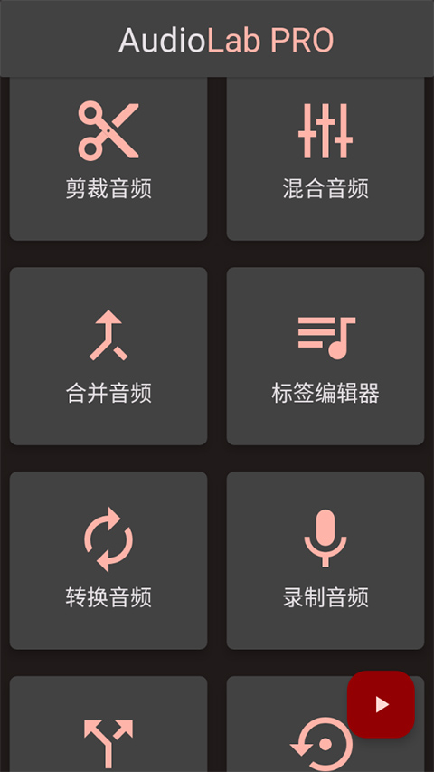
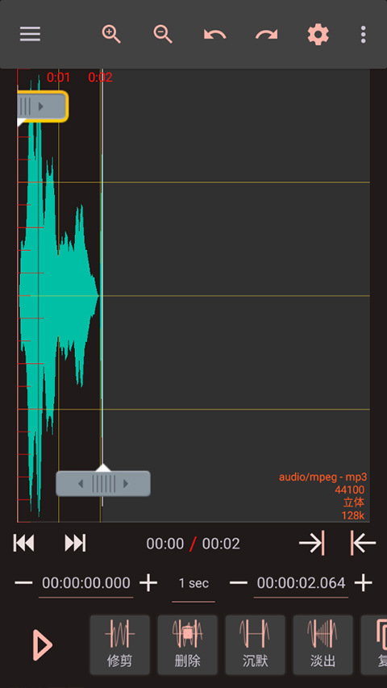

AudioLab 这三年：从录音小工具到全链路音频工作台
从最早只能录个音的单薄版本，到现在 AI 分离、BPM 检测、标签编辑一整套全链路，AudioLab 的迭代节奏里藏着团队三年没变过的执念。
现状：它已经不是当初那个录音 App 了
我最近一次打开 AudioLab 是在地铁上——帮朋友把一段采访录音里的背景风扇声处理掉，软件从audiolab下载拿的。说实话，两年前如果有人告诉我一个手机上的 App 能做到这件事，我会以为那是广告。但现在我知道它行，而且不止是降噪那点事。
最新版本的 AudioLab，去audiolab官网看一眼是个什么状态？打开主界面你会看到一排入口：录音、波形剪辑、AI 工具组、多轨混音、标签编辑器、格式转换、铃声制作……像一个把桌面端 DAW 砍成了手机尺寸的工具箱。我印象最深的是那个 BPM 和调性检测——导入一首歌，AI 扫完几秒钟就吐出来 BPM: 128 | Key: C Major 这样的结果。以前这事得开电脑、装专门的分析工具、等半天。
更让我意外的是它对"撤销"这件小事的处理。波形视图顶栏的左右箭头我以前没太在意，直到有一次连续剪错了三次才发现——它真的支持几十步回溯，AI 人声消除的效果不理想可以直接撤销重来，多轨混音里误删的轨道能捡回来。这种细节上的打磨，你只有连续用几个月才会意识到它不是"恰好做对了"，是团队花心思考虑过的。

来路：从"能录"到"好用"的四次关键转向
但如果把时间拉回去，AudioLab 完全不是现在这个样子。
样本文档里没有写它的初代版本是什么样，但从功能组织的逻辑反推，第一版的定位一定很单纯：一个能录音的 App。不是"音频工作台"，就是录音——定好文件名、选个采样率、按下录制键，完事。五个参数的设定界面（文件名、用途、通道、采样率、格式）是那个时期的核心设计，先定参数再录，避免事后返工。你现在回头看那个对话框，会发现它的逻辑完全是"先规划再行动"的桌面软件思路，和手机 App 普遍的"先录再说"反着来。这可能是 AudioLab 最早就埋下的产品性格。
第一次转向是从录音到剪辑。 什么时候加的波形视图我没查到，但撤销重做的存在本身就说明：它不再只是一个录制工具，而是开始承担编辑职责。修剪、删除、静音、淡出淡入——这些桌面 DAW 的基础操作被搬进了手机屏幕。多轨混音也是这个阶段的产物，因为只有单轨剪完还不够，用户开始需要把几段东西拼到一起。
第二次转向是 AI 的引入。 人声消除、多轨分离、BPM/Key 检测——这几个功能几乎是同一批出现的。这是个挺有意思的决策：它没有先做"变声"那种流量功能，而是把 AI 用在了"分析"和"拆解"上。BPM 检测这个点选得特别准——混音拼接、伴奏移调、卡拉 OK 选曲，三个场景都绕不开它，但以前得靠耳朵数节拍或桌面工具。AI Key/BPM Finder 的精度，我后来去audiolab文档翻了一下，鼓点清晰的歌上能接近专业工具，自由节奏的爵士就差点意思，但团队没吹"100% 准确"，这点我很欣赏。
第三次转向是"收尾"环节的补齐。 标签编辑器出现得比较晚，但它解决的是一个真实的痛点：你用 AudioLab 录了音、剪完了、导出了，扔到网易云里一看是"未知艺术家 / 未知专辑"。ID3 标签这件事，桌面端有 foobar2000、MediaMonkey 一堆工具，但手机上能改标签的音频 App 少之又少——大家都觉得这是"专业用户才关心"的事。AudioLab 偏不，直接把标签编辑器做成了独立入口，封面图都能嵌进去。虽然批量改标签它还做不到，得转格式再用桌面工具，但单文件改标签的体验是顺的。
第四次转向还在进行中：从"工具集合"到"工作台"。 我注意到样本文档里的结构已经不是按功能模块分的了——录音工作台、波形剪辑、AI 音频处理、输出与发布——它在按"工作流"组织，而不是按"功能点"组织。这说明团队在想一件更大的事：让用户不用在多个 App 之间跳来跳去，一个 AudioLab 从录音到发布全搞定。

规律：从迭代节奏看他们在死磕什么
三年迭代下来，有些优先级我看得很清楚。
他们一直在死磕"从源头到产物"的完整链路。 录音 → 剪辑 → AI 处理 → 标签 → 输出 → 发布，每加一个功能都在补链路上的一环，而不是横向扩展一堆无关的。你不会在 AudioLab 里看到直播、社交、社区、云端同步这种东西——它就是一个音频处理工具，从头到尾。
细节上不吝啬打磨。 撤销栈的深度、采样率保持一致的提醒、铃声格式的自动偏向、封面图尺寸的自动调整——这些都是用户可能注意不到但一旦出问题就很烦的地方。团队的态度是：能帮用户避免出错的地方就提前帮他做好。
AI 不做花架子，只做有用的。 市面上很多音频 App 把 AI 当营销噱头：一键变声、AI 作曲、语音转文字的粗制滥造版。AudioLab 选的是人声消除、多轨分离、BPM/Key 检测——三件事都是真实场景下的刚需，而且用对了能省好几个小时的手工活。
什么一直不管？ 批量操作就是其中一个。标签编辑器只能单文件处理，撤销历史不跨会话，没有项目管理或云同步。这些"重"功能在当前版本里完全没有影子——要么团队觉得手机场景下批量操作不成立，要么是在等其他环节先跑通再加。
预判：照这个路线，下一步会在哪
从迭代规律推的话，我觉得接下来最可能发生的是"跨会话"能力的补齐——因为这是当前链路里唯一的断点。现在的 AudioLab 每次打开都是一个全新会话，撤销历史丢了、未完成的编辑没地方存、录音和剪辑之间没有项目关联。如果真要做到"全链路工作台"，那"项目"这个概念迟早得有。
AI 方面也还有空间。现在的 BPM/Key 检测是"给结果"，但如果能让它进一步"给建议"——比如检测完两首歌后自动算出变速参数、给出移调建议——那混音拼接的门槛能再降一截。但这要看团队的优先级，毕竟他们一直不做花架子功能。
当然，这都是从迭代规律推的，不当官方口径传。AudioLab 这三年的节奏说明一件事：他们不太会被行业热点带着跑，一直在按自己的节奏补全那条从录音到发布的链路。下次更新，我比较期待看到的是更完整的项目管理，而不是什么花哨的新特效。关于 AudioLab 的资料，GitHub 上有完整目录，Gitee 和 GitCode 方便国内访问，三处同步更新。